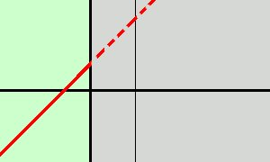
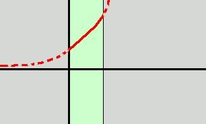
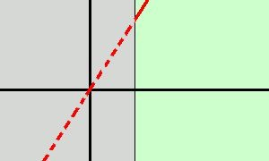

|
Disegnare intuitivamente il grafico della funzione
 Per disegnare il grafico della funzione disegniamo il grafico della prima parte y = x + 1 e consideriamolo solo nel semipiano x < 0 (scartiamo la parte in grigio)  Disegniamo poi il grafico della seconda parte y = ex e consideriamolo nella striscia 0  Infine disegniamo la terza parte y = ex e consideriamola nel semipiano x > 1 (cioe' scartiamo la parte in grigio)  Adesso "ricucio" assieme le tre parti ed ottengo il grafico completo |